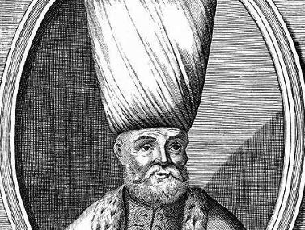

III. Ahmet, Rusya Sefiri ile sulh akdini yeniler yenilemez Kırım Hanı’na ve sınır muhafızlarına emirler göndermiş, 12. Şarl’a gönderdiği mektupta ise adı geçen sulh anlaşmasının bir maddesinde yazılıp ifade edildiği üzere, kendisinin istediği yerden memleketine dönüşüne Rusya’nın kabul ettiğini tebliğ ederek 10.000 altın kadar harcırah mükemmel besatlı, yirmi beş baş yelkendes at göndermişti. Üçünce Ahmet 12. Şarl’a bu hediyeleri gönderdiği gibi Çorlulu Ali Paşa’da ayrıca bir baş mükemmel besatlı ve 3 baş yelkendes barkir (at) [29] hediye etmişti. Fakat Şarl Rusya anlaşmanın yenilenmesini en çok Ali Paşa’dan bildiği için paşanın hediyelerini kabul etmemiş, hatta “Ben düşmanlarımın hediyesini kabul edemem” demişti.
Ali Paşa’nın buna pek fena canı sıkılmıştı. Ali Paşa, bunu en çok Yusuf Paşa’dan biliyor, Yusuf Paşa’nın görevden alınması için gereken tedbirleri alıyordu. Bu esnada Kırım Hanı Devlet Giray Ali Paşa’ya, Polonya Kralı Ogüst’ün bir mektubunu göndermişti. Bu mektupta Polonya kralı Ogüst Kırım Hanı’nın aracılığını istiyor, krallığının tasdiki için yardımda bulunmasını rica ediyordu. Esasen Kırım Hanı ile 12. Şarl’ın arası son derece açıktı. Devlet Giray, Poltava hezimetinden sonra Şarl’ın Kırım’a iltica etmesinden dolayı gücenmiş, daima Şarl ile Babıâli’nin arasını bozmaya, Şarl’a zararlı olacak teklifler ortaya koymaya başlamıştı. Şimdi de Şarl’ın silah gücüyle azlettiği Ogüst’ün krallığını tasdik ettirmek istiyordu.
Sadrazam Ali Paşa’nın tayin ettiği heyet Bender’de toplanarak 12. Şarl’ı Yusuf Paşa’nın konağına davet etmiş, fakat Şarl gelmemek için bahaneler ortaya sürmüştü. Bunun üzerine kendileri Şarl’ın ikametgâhına giderek III. Ahmet’in bu mesele hakkındaki yazısını tebliğ etmişlerdi. Fakat Şarl bu teklifi katiyetle reddetmiş, hatta Bender’den çıkmak hususunda hiçbir onay vermemişti. Şarl’ın inatlaşması III. Ahmet’e arz olunduğu zaman pek çok hiddetlenmesine sebep olmuştu. III. Ahmet, Şarl’ın Osmanlı Ülkesine sığınmasını hep Ali Paşa’dan bilir, Ali Paşa’nın aleyhinde olanların, onun aleyhinde yapmış oldukları yalan yanlış sözler ise sadrazam hakkındaki kızgınlığını bir kat daha artırıyordu.
Gerçekten saray erkânı arasında Ali Paşa aleyhinde bir cereyan hâsıl olmuştu. Ali Paşa’nın görevden alıp Sinop’a sürdürdüğü Şeyhülislam Ali Efendi İstanbul’a getirilmiş Kızlarağası’nın nüfuzu da bu husumetlere eklenerek nihayet Ali Paşa’nın görevden alınmasına karar verilmişti. III. Ahmet ise, Kızlarağası’nın tavsiyeleri üzerine sadrazamlık mührünü almış, Köprülüzade Numan Paşa’ya vermişti. (1710)
Numan Paşa’nın idaresi önceki sadrazamların idaresinden farklı değildi. Numan Paşa sadrazamlık makamına geçtiği zaman, sadrazamların iktidarsızlıklarından, memleketin perişan durumuna kan ağlayan halk artık hükümete bir şeref gelecek sanıyordu. Köprülü hanedanından bir vezirin “Köprülüler Makamına” geçmesini o şevketli devrin yeniden geleceğine dair iyi bir başlangıç sayıyorlardı. Gerçekte Numan Paşa acıma hissinin çok olması ve adalet duygusu ile diğer vezirlerden ayrılıyordu, fakat kendisinde devlet işlerini bilerek hakim bir şekilde yürütecek ve kapasiteli bir şekilde idare edecek kabiliyet yoktu. Numan Paşa’nın bazı nitelikleri o zamanın yozlaşmış çevresinde fena bir etki meydana getiriyor, bazı eksik tarafları da memleket için zararlı neticeler doğuruyordu. Numan Paşa adalete son derece uyuyor, bütün işleri en küçük ayrıntısına varıncaya kadar uyguluyordu. Adalete uygun davranması rüşvet ve yolsuzluğa alışan memurları rahatsız ediyor, ayrıntılı işlerle meşguliyet ise mühim işlerin yapılmasını önleyip, iptaline sebep oluyordu. Fakat daha sonra işin başına hep kendi dostlarını, adamlarını kayırması, bütün Valiliklere bir köy idaresinden aciz cahilleri tayin etmesi, aleyhinde husumete sebep olan bir cereyan meydana getirmişti. Numan Paşa dâhili işlerde bu gibi yolsuzluklara meydan verdiği gibi dış işlerinde de bilgisizliği devletin siyasi durumunu pek vahim durumlara sevk ediyordu.[30] Numan Paşa iki ay kadar Sadrazamlık makamında kalmış, bu müddet zarfında, siyasi işlerde hiçbir yenilik gösterememişti.
Numan Paşa tarafından Rusya ile yapılan anlaşma gereğince Osmanlı topraklarından çıkmasını Şarl’a teklif ediyor, diğer yönden Kara Mustafa Paşa ordusu gibi müthiş bir ordunun 12.Şarl’ı krallığa kadar ulaştıracağına dair Polonya’ya mektuplar gönderiyordu. Numan Paşa’nın siyasete tedbir prensibine tamamen aykırı olan şu sözleri, düşünce tarzına pek açık bir tercüman oluyordu. Numan Paşa adil ve faziletsever bir zat idi. Fakat kendisinde bu adaletten memleketi faydalandıracak fıtri kabiliyet yoktu. Daha doğrusu hareketinde saflık, siyasi işlerden habersiz şekilde bir büyüklük taslama vardı.
Numan Paşa, maaşlarını Padişahın yeniçeri hazinesinden ayarlamış, bu hal III. Ahmet’in çok canını sıkmıştı. Hatta III. Ahmet Numan Paşa’ya bu halinden şikâyet ederek “Senden önceki sadrazam Çorlulu, askerlerin aylığını vermek için çareler buluyordu!” dediği zaman Numan Paşa: “Onlar rüşvet ve yağmalarla Zat-ı şahanelerini zenginleştirmek sanatını biliyorlarmış, fakat ben, bu sanatı bilmemekle iftihar ederim!” demişti. Köprülü’nün bu doğruluğu III. Ahmet’in kalbinde bir kin duygusu hâsıl etmiş, saray entrikalarının birbirini takip etmesi Köprülü’nün Sadrazamlıktan düşmesine baş etki yapmıştı. Şimdi sarayda yeniden Baltacı lehinde bir cereyan hâsıl oluyor, Baltacı’nın kethüdası Osman Ağa’nın rüşvetler vaat etmesi sayesinde Mehmet Paşa’nın makam mevkiine gelmesine bir zemin hazırlıyordu. Hatta III. Ahmet’e, Baltacı’nın işbaşına getirilmesi hakkında tavsiyelerde bulunduğu zaman III. Ahmet bu fikri pek isabetli görmüş, nihayet Numan Paşa’yı Negrepon’a memur ederek, sadrazamlık mührünü Baltacı Mehmet Paşa’ya vermişti.[31]

Çorlulu Ali Paşa